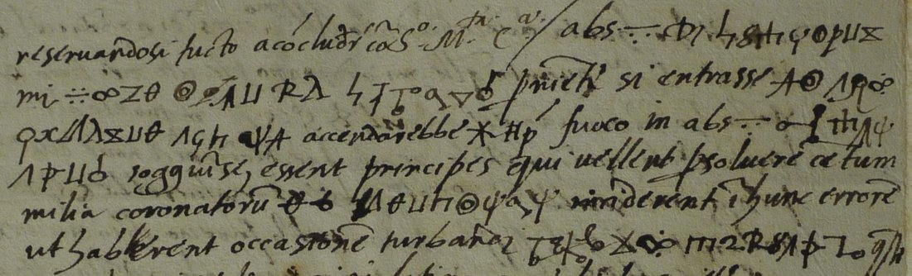
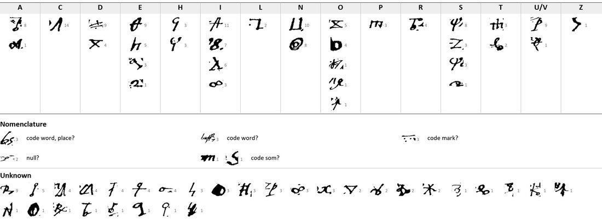

At a glanceKey partly recovered from the ciphertext · 75 of 240 signs
- The letter
- Mario Bandini, Sienese orator at the imperial court, to the Signori of Siena, Innsbruck (“Eltspruch”), 4 January 1546 Sienese style, that is 1547.
- Where
- Archivio di Stato di Siena, Concistoro 2308, fasc. 2, no. 15; DECODE R4803, catalogued “1500–1599” with no status.
- The cipher
- About 65 signs: a homophonic alphabet of Greek-like and invented signs, probable nulls, no word dividers, and Latin-letter code words (buf, abs, som, Za) each followed by a bar with three dots.
- How it was tried
- George Lasry transcribed the passages in CTTS and, with Claude Opus 5.5, guessed and dragged cribs inside the clear context.
- What it says
- The cipher speaks of an occasion to be used and of discord among the factions; a minister warns that a fire would be kindled in a coded place.
- Still open
- 165 of the 240 cipher signs and the four code words.
- Credit
- George Lasry, with CTTS and Claude Opus 5.5: transcription and partial decipherment, sent by email to Daniel Bourdeau on 17 October 2026. This page reports his result.
The two other sixteenth-century Sienese pieces of George Lasry’s report, no. 17 (Tantucci, 1528) and R4794 (the unnumbered artillery slip), are different ciphers with their own pages; their key figures were compared sign by sign with this one and every shared shape has another value.
01The letter and its key
240 cipher signs and three Latin-letter code tokens, in eight lines of the second page and six of the sixth, set as eleven short passages in the clear Italian. Bandini protests that he did not come to Germany to quarrel with Piergiovanni Salvestri, dismisses the “calumnies” that Siena is displeased at the Emperor’s victory, and reports that a minister (Granvelle?) refused the thousand he brought and asked for Sienese vases “all’antica”.


02The partial decipherment
George Lasry’s reading, unchanged (code words in brackets; ? = sign not read):
P2, lines 15–22. prudentia loro — in ?e? se di ?a?i?i ?unc d? [som] n? i? di?a senza de? s? io ?u?in? esse presenti ??d? hanno da servirsi [dell’] occasione e procurar se li potesse intervenir come ?h padri ?e? [buf] in?io?i?? di lo us? che piu ?a discordia tra loro [buf] ? Altro la ? [abs] redusse ale mani d?nds?ri anchiora V. SS.e Ill.me so’ prudenti et dunq[ue] anco da guardar [buf] [?] di ?ci?r? i?ae?u adosso se[Za] su? e?i? — De le calunnie che V. SS.e Ill.me mi significa
P6, lines 1–6. reservandosi tutto a concludere con S. M.ta Ces.a / [abs] sc?it ?uno mi disse n?cn ?i ?rh? perche si entrasse in ???ione che si accenderebbe ?? fuoco in [abs] ?t?s c?n? soggiunse: essent principes qui vellent persolvere centum milia coronatorum ut Senenses viderent hunc errorem ut haberent occasionem turbandi ??t o? pe? iculo? queste
His translation of P6: “reserving everything to be concluded with His Imperial Majesty. [abs] … he told me …, so that one should enter into … [confus]ion(?), which would kindle … fire in [abs] …; he added: there would be princes who would be willing to pay out a hundred thousand crowns, so that the Sienese might see this error, so as to have an occasion of disturbing … peril(?).”
The date: the Emperor’s recent “victory and glory” is the Schmalkaldic campaign of autumn 1546, which fixes 4 January 1546 in the Sienese year (beginning 25 March) as 1547. Siena was then a republic under imperial protection, split between its Monti; in 1547 Charles V put it under Don Diego Hurtado de Mendoza.
03What remains
- 165 of the 240 cipher signs; about 30 signs have no value, and several transcription classes are probably variants of one sign.
- The code words buf (three times), abs (three times), som and Za, and the persons or places behind them; “His Excellency” who spoke in Latin (Granvelle?).
- The filed key “Cifra con m. Bernardino Buoninsegni oratore a S. M.tà” (DECODE R4764), compared with this letter in the project’s survey of 24 September 2026, gave no conclusive match.
04Sources
- Archivio di Stato di Siena, Concistoro 2308 fasc. 2 no. 15: DECODE R4803.
- George Lasry, “The cipher documents of Concistoro 2308, fasc. 2”, report of 17 October 2026, pp. 28–30. His sources: J. Hook, Siena: A City and its History (1979); R. Cantagalli, La guerra di Siena (1962); K. Brandi, The Emperor Charles V (1939); G. A. Pecci, Memorie storico-critiche della città di Siena (1755–60).
Manuscript rights: Archivio di Stato di Siena.
Report text, key figure, profile and the project’s earlier transcription: targets/siena15/.